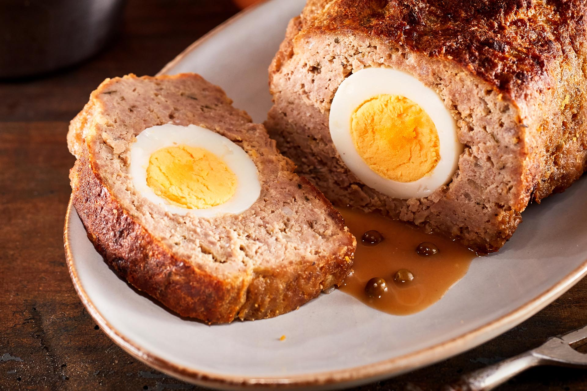

Rolo de Carne

Receita simples e rápida de Rolo de Carne
Esta receita de rolo de carne vai deixá-lo com água na boca.
Recheado com queijo, fiambre e ovo, vai ser de comer e chorar por mais.
Veja o nosso passo a passo e saiba como fazer rolo de carne.
Ingredientes
- 800g de carne picada mista (novilha e porco)
- 1 colher de chá de pimentão doce
- 1 colher de chá de oregãos
- Azeite, alho em pó, sal e pimenta q.b
- ¼ chávena de vinho branco
- 3 ovos cozidos
- 3 colheres de sopa de manteiga
Preparação
- Tempere a carne com pimentão doce, alho em pó, sal e pimenta.
Regue com o vinho branco e um pouco de azeite, misturando tudo.
Deixe repousar cerca de 30 minutos
- Adicione o pão ralado e estenda a carne numa superfície lisa.
Coloque os ovos em fila no centro e enrole, de forma a obter um
rolo bem fechado
- Coloque o rolo num tabuleiro, regue-o com um fio de azeite
e espalhe a manteiga por cima
- Leve ao forno durante 20 minutos a 200.
Se necessário, vá adicionando um pouco de vinho branco
Home Page